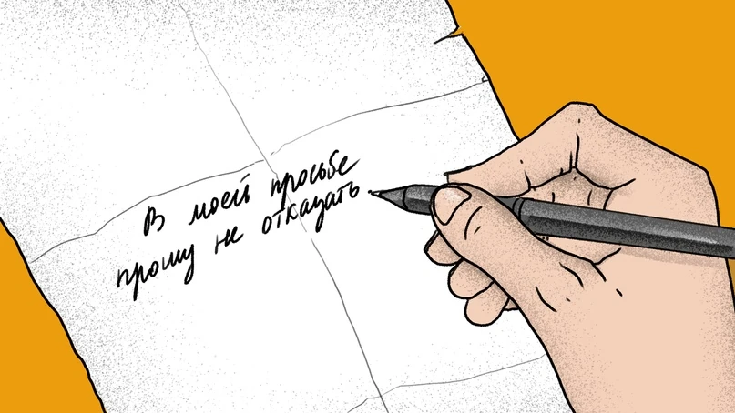

Глава о переворотах — как на зоне, так и в личной жизни Mr.Nobody
Тот год был богат на события: помимо всяких ложно-смешных несчастий, которые стабильно со мной случаются, происходили вещи глобальные — не только в моей судьбе, но и в жизни всех, кто отбывал наказание в нашей колонии.

Адвокату удалось кое-чего добиться, и я ожидал этапирования в город N — на рассмотрение моего дела по апелляции. За месяц до отъезда состоялось очередное длительное свидание с Настей. Она привезла мне целую кипу конвертов, — тюрьма в городе N была красной, и кроме почты и звонков через администрацию связи не предвиделось. Вместе с конвертами Настя отдала мне большую спортивную сумку для книг, которых у меня было вдвое больше, чем всего остального, и множество всяких мелочей, которые, как Настя считала, пригодятся мне по дороге. Любовь всегда непрактична — в пути я подхватил воспаление легких из-за отсутствия теплых вещей (о них мы совсем забыли) и постоянного сквозняка в столыпинском вагоне. Течение забот и мыслей Насти полностью совпадало с моим: мы возлагали огромные надежды на будущий суд, обсуждали совместные планы, смеялись, давали друг другу обещания, которые и не собирались сдерживать.
Я уехал из лагеря в конце лета. Пока я прощался со знакомыми зеками, меня не покидало ощущение, что я вижу их в последний раз — это предчувствие отчасти оказалось верным. Каких-либо церемоний не было — пока в колонии всем заправляли спортсмены, люди почти не доверяли друг другу, будто у каждого действия есть свой подтекст, а каждая ошибка влечет неизбежную кару.
Вместе со мной этапировался один взрослый мужчина, страдавший закрытой формой туберкулеза. Пока мы ехали в автозаке до железнодорожной станции, я старался пореже дышать.
В тюрьме даже банальная простуда переносится очень тяжело, а смерть от чахотки вообще отдает какой-то толстовщиной.
Вдвоем мы добрались до первой моей остановки — централа в ближайшем к зоне городе. Во всех зданиях тюрьмы царила разруха: облезлые стены, протекающие трубы, огромные крысы и откровенное распиздяйство сотрудников. Последнее стало особенно очевидным после того, как меня «подняли в хату» спустя двое суток после приезда. Все это время мне пришлось просидеть в сырой раздолбанной камере, располагавшейся в подвале. Питался я пайком, который выдают зекам на этап (по словам Хованского, галетой из этого сухпайка зек может заколоть человека). Затем обо мне вспомнили, причем никакого раскаяния или хотя бы слабого отпечатка вины на лицах сотрудников я не увидел — их просто повеселила собственная забывчивость.
Меня отвели в душевую, а после — в «транзитную хату», где уже находились около пятнадцати человек. Шконки, телевизоры, которые никогда не выключались, вентиляторы и даже небольшая плита. Спать там было решительно невозможно: постоянный шум, крики. Каждый день я звонил Насте, но нам обоим было совершенно нечего сказать друг другу — былой, как говорится, кураж, сменился тем томительно-серым ожиданием, которое знакомо всем людям, на чьем пути маячит что-то судьбоносное.
Через неделю меня снова увезли: на этот раз я остановился в красной тюрьме города N. Это не слишком удручало — большую часть времени до колонии я провел именно на таком централе, и отсутствие связи играло на руку как мне, так и Насте. Если уж ждать, то лучше не поглядывать на часы.
Пока я был там, в лагере происходили беспрецедентные события. Мне неизвестно, кем и как долго это готовилось, зато известно, каким образом случилось.
Все началось с того, что один из спортсменов получил ножом в живот прямо на зоновском футбольном поле. Следом из двух бараков выбежали зеки с импровизированным оружием — палки, арматура, заточки и так далее. Они кричали:
— Бей блядей!
Внешне все напоминало стихийные беспорядки. Спортсмены и их приближенные возводили баррикады на входах в бараки — материалом служили шконки, матрасы, тумбочки, карнизы и всякий хлам. Когда это все завертелось, большая часть качков находилась в лагерном клубе. «Восставшие» заблокировали все выходы из здания, а потом начали штурм. Численное превосходство принесло свои плоды: угнетатели получили по заслугам и характерно то, что никто не умер.
С начала бунта прошло меньше часа, прежде чем в зону заехали три-четыре машины со спецназом. Менты жестко разогнали всех, кто оставался на улице, опьяненный свободой. Но к этому времени все уже закончилось. Тех, кто был ранен, откачали врачи. Потом их вывезли в другие лагеря — скорее всего в красные, потому что в черных качков точно убили бы.
В течение месяца я добивался от администрации тюрьмы разрешения на звонок Насте. Каждый день на утренней проверке я отдавал очередное заявление на имя начальника. Сосед по камере, наблюдая за моими попытками, отметил, что, возможно, проблема в формулировке самого прошения:
— Раз знаешь, как лучше, — напиши, — говорю.
Он написал. В конце заявления было добавлено: «В моей просьбе прошу не отказать»…

За неделю до суда мне все-таки удалось позвонить. На вечерней проверке сотрудник отвел меня в комнату, где находился телефон.
— Здравствуй, Настя, — еле выдавил я. Меня захлестнула такая волна эмоций, что язык заплетался.
— Привет. А кто это? Мне сейчас не очень удобно говорить, я на совещании, — отвечала она ровным голосом.
Все эти дни я думал о предстоящем разговоре с ней, и сейчас он складывался так, как я точно не мог предположить.
— Это Mr.Nobody. Я в тюрьме города N, жду суда.
Последовала неуютная пауза, звучавшая так, будто Настя сверялась со списком имен, как секретарь. И в итоге нашла мое.
— Ах да! Привет! Ты можешь потом позвонить? — спросила она, доведя унизительность моего положения до критического уровня.
Рядом стоял мент и смотрел на меня недоумевающим взглядом, как бы говоря: ты ото дня в день ебал всем мозги ради вот этого? Хотя, может, мне так только показалось.
— Нет, Настя, не могу перезвонить, у меня всего десять минут. Все хорошо? — зачем-то спросил я.
— Да, хорошо. Слушай, мне правда пора… — начала она.
— О, да, я понимаю. Мне тоже, — ляпнул я, пока голос в голове орал: «Куда, блять, тебе пора, идиот?!»
Настя повесила трубку. Я переглянулся с ментом, в его глазах промелькнуло сочувствие. А может, мне просто хотелось, чтобы так было.
В этот же день ко мне в хату поселили парня, приехавшего из колонии, располагавшейся неподалеку от тюрьмы. Он умудрился пронести телефон (черно-белую «Нокию»), и ночью я снова позвонил Насте. Не помню, что говорил я, что — она, но понимание между нами ушло. Мы расстались: без ссор, упреков и прочего. Будто все произошло само собой. Это случилось в ночь на 3 сентября, весь день с утра до вечера по радио крутили блядскую песню Шуфутинского.
— Расстаться все же нам пришлось… — пел шансонье.
Я лежал на кровати, чувствуя опустошенность и жалость к себе, мучительно хотелось напиться. Почему сейчас? Именно тогда, когда у нас появился шанс все изменить. Для чего это все было нужно? Какими вопросами я только ни задавался, но ответов не находил. Они, наверное, существовали и маячили где-то вдалеке, но сил на их поиски не было. А Шуфутинский все пел и пел.

После суда меня отвезли на централ, ближайший к лагерю. Повсюду обсуждали случившийся бунт, количество жертв, масштабы разрушений. Все перевиралось и, как обычно, преувеличивалось. По региональным новостям даже показали какой-то репортаж. Все это мало меня занимало, несмотря на то что я должен был со дня на день вернуться на эту зону. Меня донимал сильный кашель, будто организм решил для баланса поравняться с моим отвратительным моральным состоянием. Трясясь в тюремном вагоне, я бездумно смотрел в открытое окно, ничего не чувствуя.
Поезд долго бежал лесом, а затем остановился, и пейзаж потерял свою анонимность. Я вернулся в лагерь.